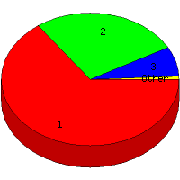

Week of 8/1/2010 to 8/7/2010: Top
4 of
4 File Types (Extensions)
Sorted by Access Count
Individual file types as determined by file extensions. All URLs that
do not contain an extension are counted as directories.

| Rank |
Type |
Accesses |
% |
Bytes |
% |
| 1 |
html
|
97 |
65.10 |
2,048,362 |
90.31 |
| 2 |
Directory (folder)
|
40 |
26.85 |
198,520 |
8.75 |
| 3 |
ico
|
11 |
7.38 |
15,466 |
0.68 |
| 4 |
com
|
1 |
0.67 |
5,672 |
0.25 |